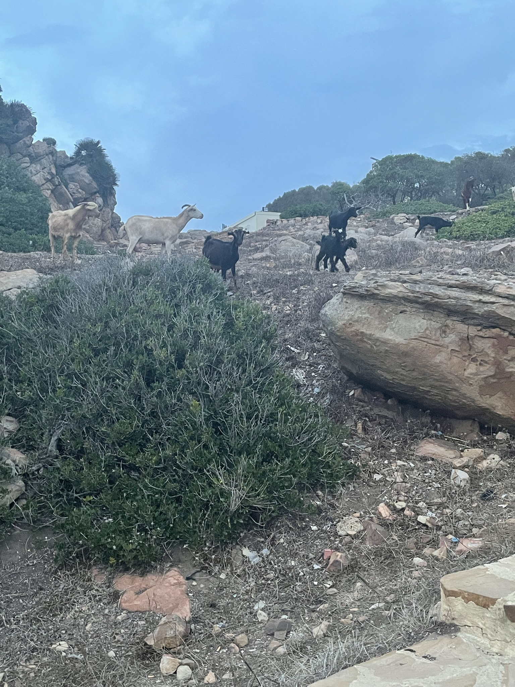
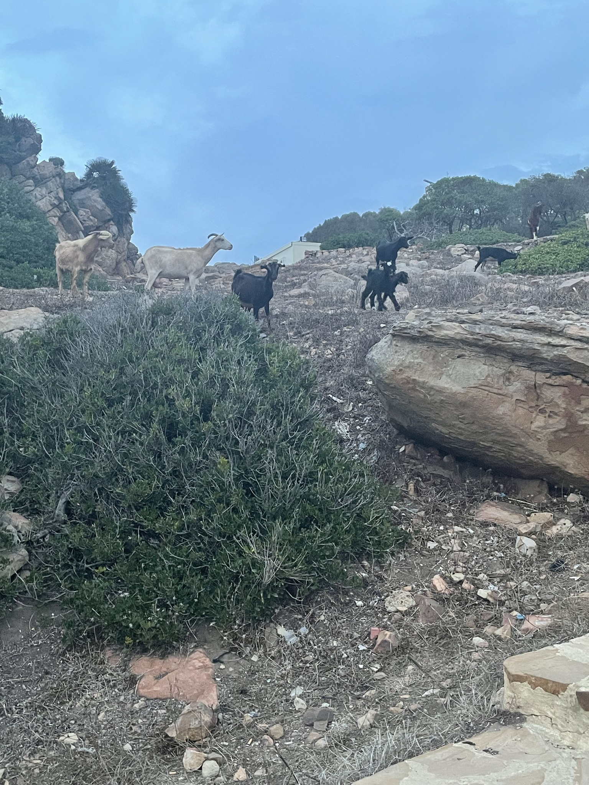

There is adequate content in the site.
There are three pages and every page has at least one image and at least one of those pages has at least five (5) images.
There are 6 images on every page.
The site returns no errors from the w3validator.
Yes
CONFIRMED
"The Skip to Content" link is present and only visible when the link is in focus.
Yes
When hitting tab(focus) the button will appear in the top left hand corner of every.
The navigation is styled an attractive fashion using at least three CSS properties.
The navigation is styled with at least three properties and the appearance is different from examples we have seen in class.
Background gradient, font-size, border, box-shadow, padding, border-radius, text-decoration. With hover being utilized as well as focus links and active links.
The images are styled and the border, padding, and border-radius are all modified.
The images are styled with all three required properties and the appearance is different from examples we have seen in class.
Yes green border, with padding and border radius, with a rotation effect on hover.
The grid property is applied to at least one parent element and multiple columns are used.
The grid property is applied to at least one parent element, multiple columns are used, and the additional properties are applied.
The grid layout is applied to the `.image-grid` container(parent element), with three columns created using `grid-template-columns`, and additional properties like `gap` are used to control the spacing between items.
At least one selector uses the :hover.
The flex property is applied to at least one parent element and the additional properties are applied.
Flex applied to nav ul(parent element) of nav a(child element).
The flex property is applied to at least one parent element.
The hover pseudo-class is used and the change on hover is interesting.
On hover the nav links swap the gradient colors making it look like the purple is underlining it and when hovering over (even) pictures they do a full 360 degree spin.
At least one selector uses :nth-child.
:nth-child is used and the change on hover is interesting.
The nth child even does a 360 degree spin on hover.
The site returns no errors from the WAVE Web Accessibility Evaluation Tool.
There are no errors.
CONFIRMED
Image Gallery Page and Rubric
 
